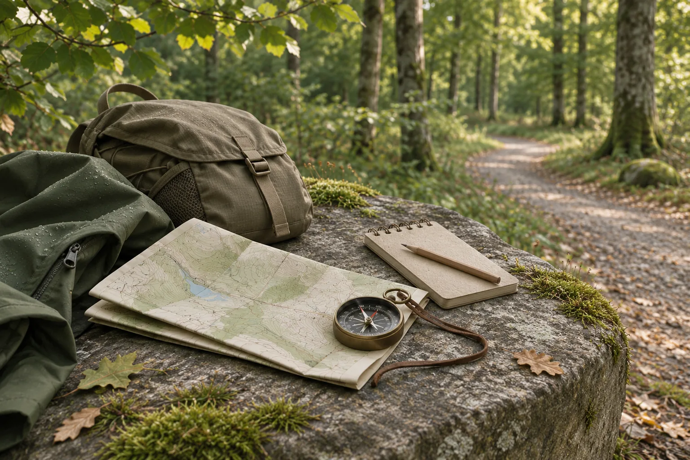

Praktiske færdigheder
Du øver dig i virkeligheden og ikke kun i teorien.
Om UdeKlar
UdeKlar kombinerer friluftsliv og praktisk undervisning med fokus på sikkerhed, ansvar og gode beslutninger.

Vores formål
Naturen er et læringsrum. UdeKlar er ikke bygget som passiv underholdning eller som en samling opmøde-badges. Målet er, at deltagere kan bruge det, de lærer, på egne ture.
Undervisningen er civil, jordnær og tilrettelagt, så flere kan være med. Vi arbejder med praktiske opgaver i kontrollerede rammer og med refleksion bagefter.
Du øver dig i virkeligheden og ikke kun i teorien.
Du lærer at vurdere muligheder, usikkerhed og grænser.
Målet er, at du kan planlægge og gennemføre egne eventyr.
Status
UdeKlar er for mennesker, der vil lære bål, lejr, mad og navigation gennem praktiske opgaver ude i naturen.